I design complex e-commerce, SaaS and behavioural products, turning research and business constraints into clear decisions.
Customised orders rose 22% after the Galls configurator I designed shipped. AI-assisted prototyping makes ideas testable in hours, not days.
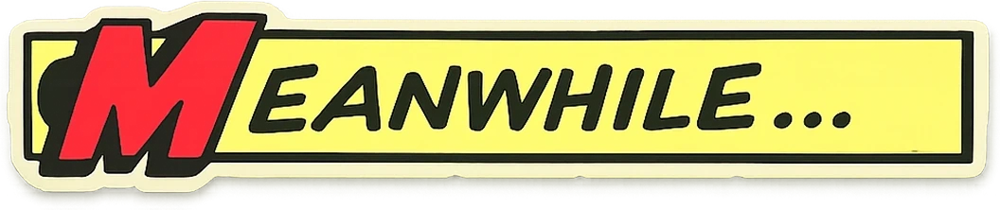
hover the icons · click to hold
cooking makes me happy. eating this will make you too
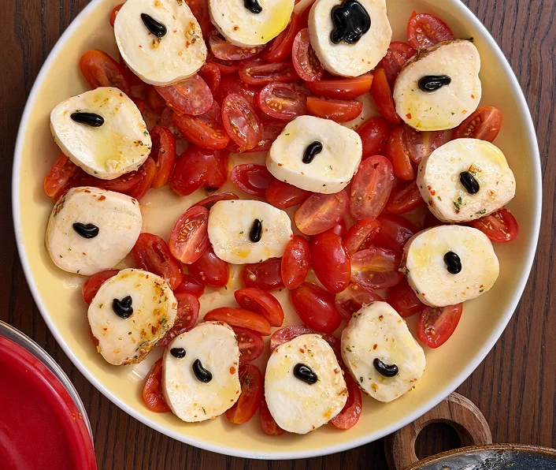
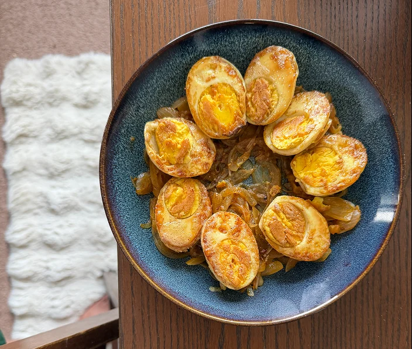
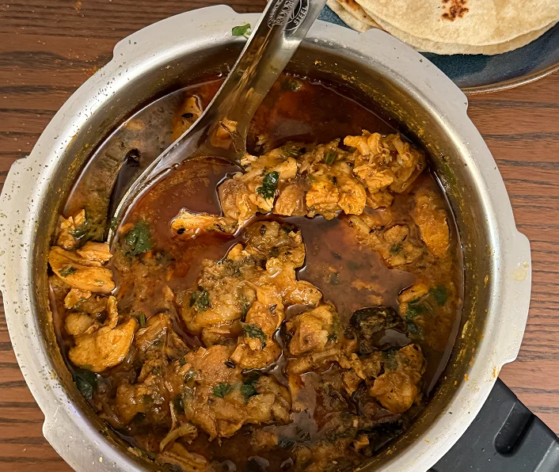
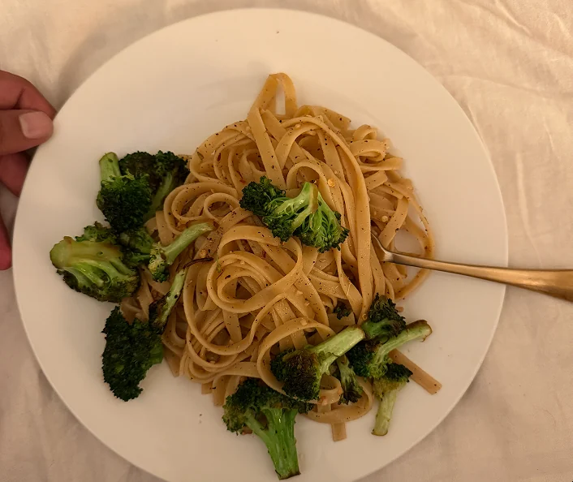
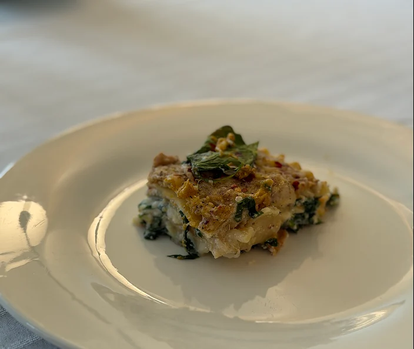
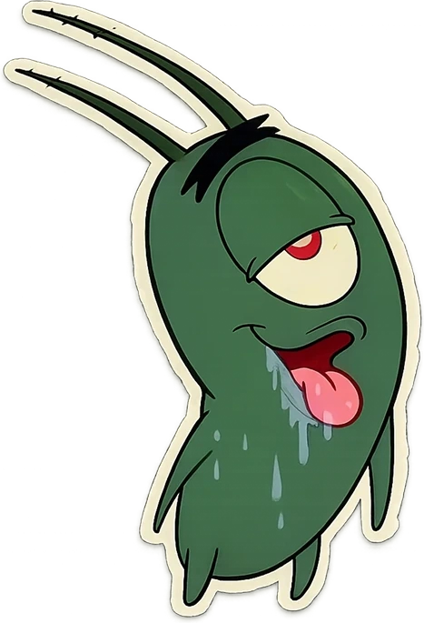
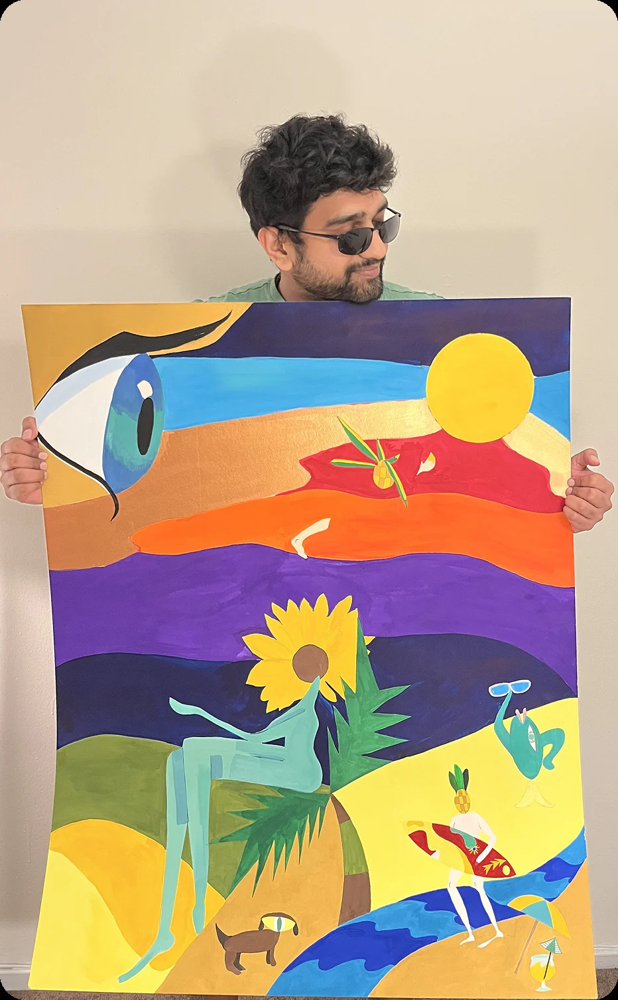
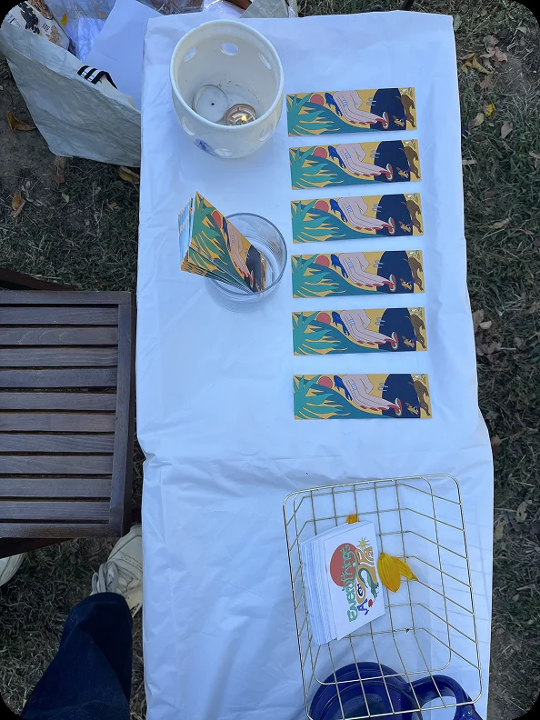
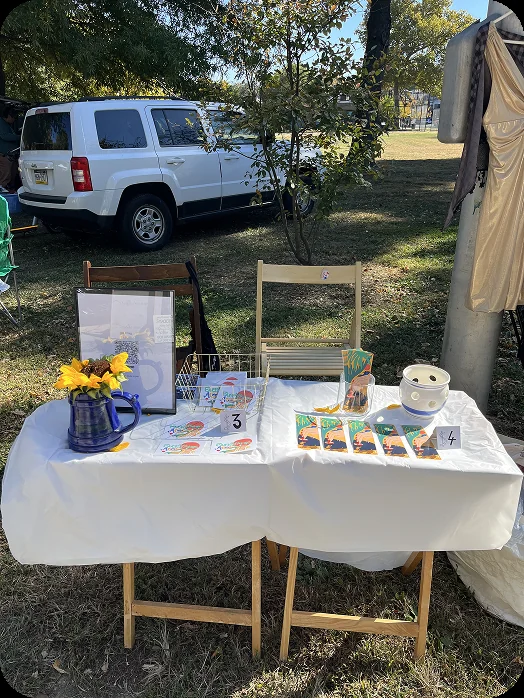
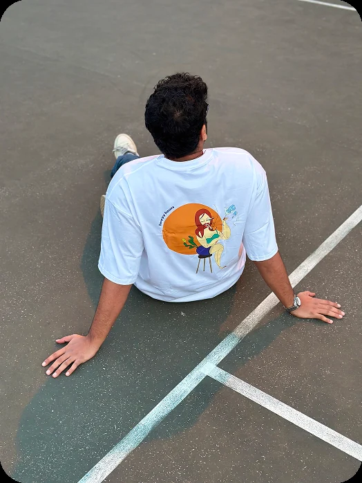
I am into surrealism and whimsical artwork, it’s my fav thing! I created this canvas over 2 years
created my own merch with my artwork
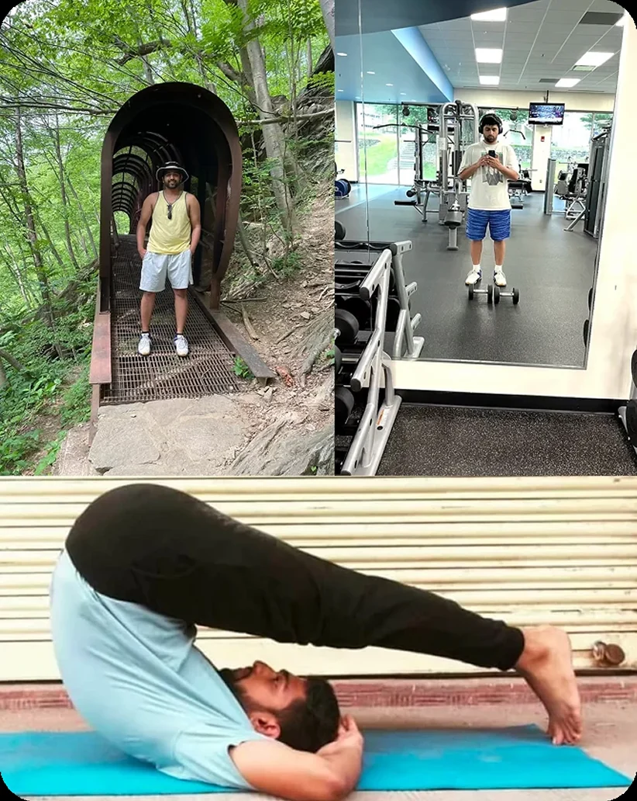
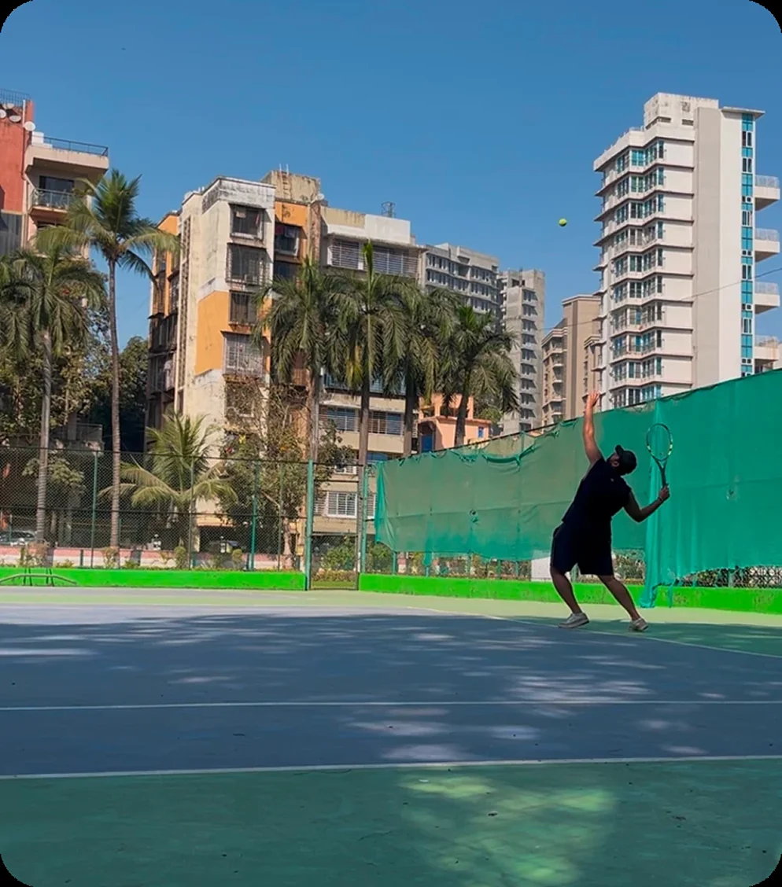
20+ years playing tennis has made me a true sportsman, now I apply it everywhere
yoga + meditation day counter2,653 days
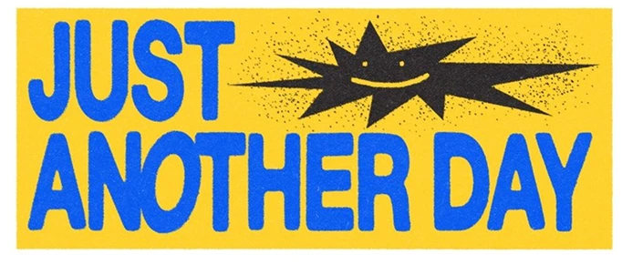